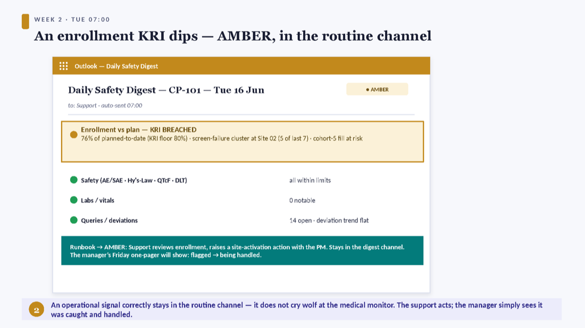
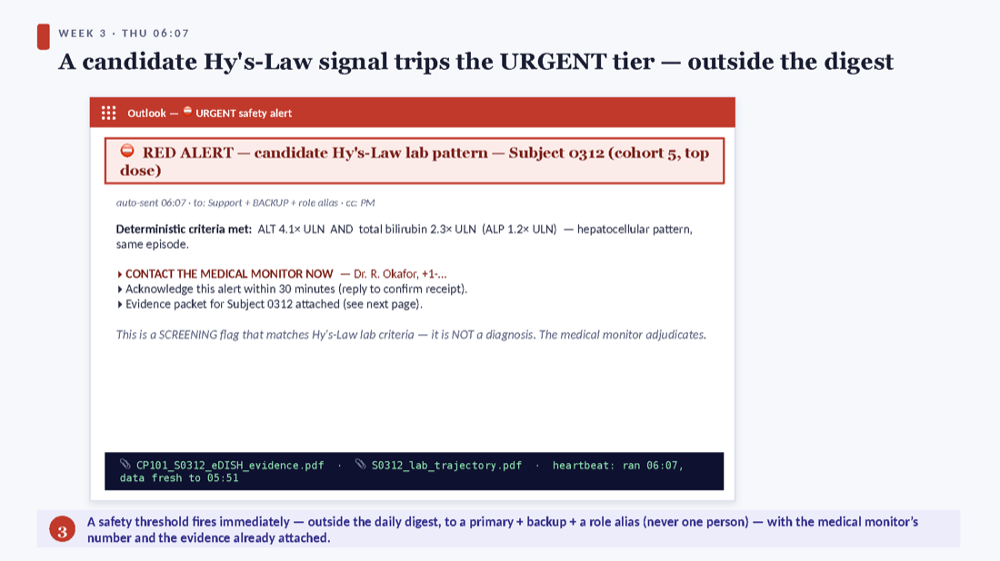
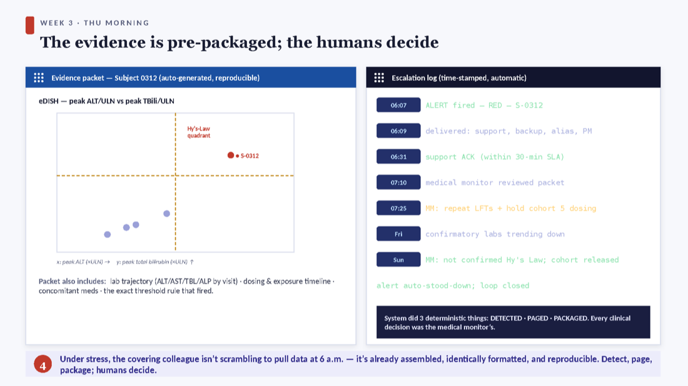

SAS/R Trial-Monitoring Automation — the coverage you can ship today
A deterministic, no-AI companion to the Claude + Local and M365 Copilot + Local pipelines. It automates trial monitoring using only validated SAS and/or R, inside the existing environment — so a covering team and the manager stay informed while the lead is away, with no new tools, no new vendor, and no PHI egress.
The 60-second version
- A scheduler (OS Task Scheduler / cron) fires a version-controlled SAS or R program in unattended batch mode, under a service account.
- The program ingests the latest validated extract, runs deterministic checks, and renders a report (SAS ODS / R Markdown).
- It notifies people in two tiers: a scheduled digest (daily to the cover, weekly one-pager to the manager) and an immediate threshold alert on any KRI / QTL / DLT / SAE flag.
- Every run emits a heartbeat with a data-freshness timestamp — so silence is never assumed.
See it end-to-end in Coverage while on leave — a full month on Study CP-101.
Why this is the lowest-risk of the three pipelines
It adds nothing new: no LLM, no model to validate, no vendor, no data leaving the validated boundary. Every reported number comes from the same double-programmed, QC’d programs the team already uses. So there is no new approval gate between today and go-live — only the team’s normal program validation / change control.
The deterministic loop — scheduler → program → report → notify
Every component already exists and is qualified inside a validated SAS/R environment. Pick whichever scheduler is already approved in your shop — do not introduce a new orchestrator just for this.
Scheduling options (use what is already validated)
| Option | What it is | When |
|---|---|---|
| SAS batch via OS scheduler (the validated default) | sas -sysin monitor.sas -log dated.log -batch -noterminal, fired by Task Scheduler / cron. Pure Base SAS 9.4 behaviour that has run validated pipelines for decades. | The lowest-governance, most defensible choice. Start here. |
| cronR / taskscheduleR (R) | R-native wrappers to register Rscript jobs (cronR::cron_add(), taskscheduleR::taskscheduler_create()); pin packages with renv for byte-reproducibility. | When the report is authored in R (ggplot2 / gt / safetyGraphics eDISH). |
| SAS 9.4 EG / Studio / Stored Processes | Export a flow to a deployed job run by Platform/LSF or Task Scheduler; Stored Processes for parameterized server-side runs. | Legacy-but-valid on a 9.4 stack. |
Scheduled data ingestion
The job’s first step reads the latest validated extract deterministically: SDTM/ADaM .sas7bdat/.xpt (libname xport, haven::read_xpt()), EDC CSV exports, a read-only DB view to the safety/IXRS database (SAS/ACCESS, DBI+odbc). A small macro resolves the newest dated file so “latest export” is unambiguous. It is only as fresh as the upstream cadence — document each source’s refresh frequency in the report header (see the freshness gate).
The monitoring-checks catalog
A fixed battery of deterministic flags that run unattended and give the same answer every time on the same data. Each is a pure data computation in validated SAS (PROC FREQ/MEANS/SQL/REPORT, ODS) or R (dplyr + admiral-style derivations + gt/flextable + safetyGraphics for eDISH). A flag is a prompt to look — never an adjudication.
| Check | What it computes | The honest boundary |
|---|---|---|
| AE / SAE counts & rates | Running tallies by cohort, MedDRA SOC/PT, grade, relatedness; participant-incidence and event counts. | Participant-incidence vs event counts — report both. Causality/expectedness come from the safety DB. |
| Candidate-DLT tally vs the rule | DLT-flagged events in the evaluation window per cohort vs the 3+3 / BOIN boundary. | Only against an adjudicated DLT flag & a completed window. Never makes the escalation decision. |
| Hy’s-Law / eDISH | Peak ALT or AST >3×ULN and total bilirubin >2×ULN (ALP<2× for hepatocellular); the eDISH quadrant plot. | A screening flag matching the lab criteria — never a Hy’s-Law/DILI diagnosis. |
| QTcF prolongation | Absolute >450/480/500 ms tiers and ΔQTcF >30/>60 ms (ICH E14), by participant/visit/dose. | Use the protocol correction (don’t mix QTcF/QTcB). Threshold crossing only. |
| Labs / vitals out-of-range & shifts | Values outside reference / PCS criteria; baseline-to-worst shift tables by CTCAE grade. | Reference ranges & PCS criteria are the validated study-specific metadata. Out-of-range is statistical, not clinical. |
| PK exposure outliers | Cmax / AUC outliers vs cohort and vs prior cohorts; pre-specified exposure ceilings. | Thresholds must be pre-specified in the protocol/SAP to stay deterministic. |
| Enrollment vs plan & screen-fail | Actual vs planned by cohort & over time; screen-failure rate with reasons; cohort-fill. | Pure operational counting; depends on disposition data being current. |
| Query aging & missing safety data | Open queries by age bucket & site; missing/overdue critical safety fields in the DLT window. | Flags presence/age of queries, not whether the data is correct. |
| Protocol deviations | Counts by category & severity, by site & over time, with a spike trend flag. | Counts & trends as logged; does not classify severity (a quality/medical judgment). |
| Visit compliance | Missed / overdue / out-of-window visits vs the schedule — critical for DLT-window safety visits & PK timepoints. | Run-date dependent (uses “today”), so a daily job keeps “overdue” current. |
| Randomization / IXRS reconciliation | Every randomized participant in both systems; kit/dose matches cohort; drug accountability. | Discrepancies escalate to a human (DM / unblinded pharmacist); never auto-resolved; blinding preserved. |
Two-tier reporting & escalation
Entirely inside the validated environment — zero AI, zero new vendor, zero PHI egress.
Tier 1 — the scheduled digest
- Daily safety-scan digest → the covering colleague: enrolled/dosed by cohort, new AEs/SAEs, labs out of range, ECG/QTc flags, cohort DLT tally, queries — with a green/amber status and a heartbeat. Keep a “no new flags” email firing too — silence must be a positive confirmation.
- Weekly status pack → the cover (cc the lead’s inbox for the return): enrollment vs plan, escalation status, screen-fail, query backlog, deviations, visit compliance.
- Weekly one-pager → the manager: one status light, enrollment %, count of safety flags this week and their disposition (open/closed/escalated). Strictly numeric — this is where “no AI narrative” is a feature: every number traces to a validated program.
Tier 2 — the threshold alert & escalation
- Immediate urgent email when a pre-specified rule fires — a DLT-defining grade, an SAE, a QTcF crossing, a KRI breaching its QTL, a stopping-rule count. Distinctly flagged, outside the digest.
- Severity routing. Tier A (SAE/DLT/stopping-rule/Grade-4): immediate to support + backup + role alias, with an explicit “CONTACT THE MEDICAL MONITOR NOW” and the MM’s name/number in the body. The system notifies and instructs whom to call — it does not contact the MM’s clinical decision for them, does not pause dosing, and does not adjudicate causality.
Delivery mechanics (pick what is in your validated environment)
| Stack | How | Governance note |
|---|---|---|
| SAS-native | FILENAME out EMAIL / the EMAIL access engine — attach the ODS report, conditional send. No add-on packages. | Over internal SMTP it keeps everything on-prem with no cloud token. |
| R-native | Microsoft365R (Graph) for Outlook/Teams/SharePoint, or blastula/sendmailR for richer HTML email. | Microsoft365R routes through Graph/AAD (cloud auth) — fine inside the tenant; confirm it suits your data-handling posture. |
Coverage while on leave — a month on Study CP-101
The deterministic system doing its one job: keeping Phase 1 monitoring alive and self-escalating for a month while the lead is unreachable in Europe — with zero AI and zero new tools.






Illustrative mockups. The honest division of labor throughout: the SAS/R system detected, paged, and packaged pre-specified threshold crossings; the medical monitor and the covering colleague made every clinical decision.
Why it won’t fail silently
| Failure mode (while the lead is away) | The SAS/R safeguard |
|---|---|
| The scheduled job dies silently — daemon down, server rebooted, expired service-account password, locked licence, full disk. No red email → assumed green → the trial runs unmonitored. | Heartbeat / dead-man’s-switch. Every successful run emits a positive “ran OK, N records, SYSCC=0” ping; an independent watcher (a second tiny cron on a different host) escalates if the ping is missing. |
| Stale-data masquerade — the job runs green daily, but a feed silently stopped refreshing. Checks compute reassuring numbers on an old snapshot; a new SAE/DLT in the source is invisible. Green here is worse than red. | Data-freshness gate, run first. Before any safety logic, compare each feed’s newest timestamp to now; if a source stopped updating, raise it. Put the freshness times in the report header. |
| Alert storm / fatigue — a mis-set threshold, a units mismatch (mg/dL vs µmol/L), a duplicate record, or one ongoing event fires the same RED dozens of times. The cover mutes the thread; the next real signal is buried. | De-duplication. A persistent seen-flags table keyed by participant+test+event alerts once on first detection; rate-limit and escalate-on-change only. |
| Human single-point-of-failure — the one covering colleague is also on PTO/sick/offline, and the lead is asleep in a European timezone when a 06:07 RED fires. The alert lands in a void. | Primary + backup + role alias, committed pre-departure, with an acknowledgement SLA (reply within 30 min) and a re-page / next-recipient rule if it isn’t acknowledged. |
Governance, validation & honest limits
Why it is the lowest-risk pipeline
- No new validation surface. The DLT tabulations, exposure summaries, lab-shift tables and counts it surfaces are produced by the same validated programs already qualified for the study. The lead is automating the delivery/cadence of validated outputs, not creating a new method.
- Deterministic & reproducible. Same data → byte-identical result, every run. No sampling, no temperature, no model drift — nothing to “explain.” An LLM summary is plausible but not auditable line-by-line; a SAS/R alert is both.
- Zero PHI egress. Everything runs where the data already lives — no external API, no cloud model, no new vendor. This sidesteps the entire BAA/HIPAA question that constrains the AI pipelines.
- The automation itself is validated like any study program: the thin scheduling wrapper and the threshold logic get the team’s normal risk-based SDLC — spec, independent review, documented testing, change control.
- Double-programming preserved. Anything formally reported (submission, SRC/DSMB pack, sponsor deliverable) is still independently double-programmed. Classify every output as REPORTABLE (QC’d before it goes out) or SIGNAL-ONLY (single-program, human-confirmed).
The honest limit
For the manager, in one line
Because there is no AI, no new vendor, and no PHI egress, there is no new approval gate between today and go-live — only the normal program-validation/change-control the lead already runs before any study output ships.
FAQ
How is this different from the AI pipelines? It is deliberately the opposite: deterministic, validated, no AI, no new vendor, no PHI egress — the layer you can ship today. The Claude+Local and Copilot+Local pipelines add the narrative-triage and knowledge layers on top, later.
Does it make clinical decisions? No. It detects pre-specified threshold crossings, pages the right people, and packages the evidence. The medical monitor and the covering biostatistician make every call. A flag is a prompt for a human, never a finding.
What if a job fails while the lead is away? The heartbeat / dead-man’s-switch and the data-freshness gate are designed so a dead job or a frozen feed announces itself — see Won’t fail silently. “No news” is never “good news.”
Do we need new software? No — use the SAS/R and the scheduler already validated in your environment. Introducing a new orchestrator just for this would re-add the governance cost you are avoiding.
Is the on-leave example the only use? No — that is the anchoring scenario, but this is the standing monitoring backbone for any study, any time. Coverage during leave is just where its value is most obvious.
Walkthrough transcript
The complete narration of the “Coverage while on leave” video, as readable text.
1. Part 1
Here's the third companion pipeline — the one you can ship today. It uses strictly SAS and R, no AI, to keep trial monitoring running while the lead biostatistician is away for a month. Let me walk through a real month on Study CP-101: how it's set up, what the covering colleague and the manager receive, and what happens when a real safety signal fires — all inside the existing validated environment.
2. Part 2
Before leaving, the lead doesn't write new code — they schedule the monitoring programs that already run on demand. Five jobs: a nightly data refresh with a freshness check, a morning safety scan, a daily digest to the covering colleague, a weekly status pack plus a one-page summary for the manager, and an on-event threshold alert. It all runs under a service account that outlasts the lead's login. And a one-page coverage runbook goes to the support and the manager: what green, amber, and red mean, who does what, and the honest note that a flag is a number crossing a line — not an interpretation.
3. Part 3
Week one is quiet. Every morning the covering colleague gets the digest — enrollment, new adverse events, liver and QT flags, the cohort DLT tally, queries — all green. The most important line is at the bottom: the heartbeat. It confirms the job ran, on data fresh as of this morning, with no errors. That's the trick to an unattended month: silence is never assumed. A missed job or a frozen feed announces itself, instead of hiding behind a green screen.
4. Part 4
Week two, an operational signal. Enrollment slips below its KRI floor — seventy-six percent of plan, with a screen-failure cluster at one site. The digest renders that row amber. Notice where it goes: it stays in the routine channel. The covering colleague reviews it and raises a site action with the project manager — it does not cry wolf at the medical monitor. And the manager's Friday one-pager simply shows it was flagged and is being handled.
5. Part 5
Week three, a real safety signal. Overnight, a participant in the top dose cohort shows a candidate Hy's-Law lab pattern — ALT over three times the upper limit, and bilirubin over twice it. This trips the urgent tier, outside the digest, immediately — to the support, a backup, and a role alias, never just one person. The email carries the medical monitor's number, a thirty-minute acknowledgement requirement, and, crucially, it's honest that this is a screening flag that matches the lab criteria — not a diagnosis. The medical monitor adjudicates.
6. Part 6
And it doesn't just say something happened — it attaches the evidence, already assembled: the eDISH plot with the participant in the Hy's-Law quadrant, the lab trajectory, the dosing timeline, and the exact rule that fired. On the right is the escalation log, time-stamped automatically: the alert fired at six-oh-seven, was delivered, acknowledged within the SLA, reviewed by the medical monitor — who ordered repeat labs and held dosing — and by Sunday the signal didn't confirm and the cohort was released. The system did three deterministic things: detected, paged, packaged. Every clinical decision was the medical monitor's.
7. Part 7
Week four, the lead is back. Waiting for them is a complete, time-stamped archive: every daily log, every digest with its heartbeat, the two notable alerts and how they resolved, the auto-built evidence packet, and a heartbeat history proving every run was accounted for. Because the whole system is deterministic and validated, there's nothing to reconstruct — no question of what an AI decided and why, no PHI egress to explain. The loop closed itself: flag, escalate, package, decide, stand down.
8. Part 8
The reason a manager can trust this is that it's designed so it can't fail silently. Four safeguards. A heartbeat with an independent watcher, so a dead job announces itself. A data-freshness gate that runs first, so a clean green on stale data — which is worse than red — gets caught. Alert de-duplication, so one real event alerts once instead of a storm that buries the next signal. And primary plus backup recipients with an acknowledgement requirement, so a six a.m. alert never lands in a void. The rule in the SOP: no news is never interpreted as good news.
9. Part 9
So, the bottom line. This is the lowest-risk of the three pipelines — no AI, no new vendor, no PHI egress, no new validation surface — so there's no approval gate between today and go-live. It's deterministic and reproducible, so the audit trail is automatic. It detects, pages, and packages; the humans and the medical monitor still make every call. And it's necessary, not sufficient: the narrative-triage layer is exactly the seam the AI hybrid fills later. Ship this now; add AI on top when it's approved. The peace of mind is simple — monitoring never stops, even silence is verified, and every escalation is automatic and logged, while the lead is unreachable in Europe.